Customer electronic invoices in Norway
For compliance with European Union Directive 2014/55/EU, the Norway-specific EHF Billing 3.0 format for electronic invoices has been implemented based on the PEPPOL Billing 3.0 specification.
This topic provides information about how to configure and issue customer electronic invoices in Norway.
Prerequisites
The primary address of the legal entity must be in Norway.
Import Electronic reporting configurations
In the Electronic reporting workspace, import the following Electronic reporting (ER) formats from the repository:
- OIOUBL Sales invoice
- OIOUBL Project invoice
- OIOUBL Sales credit note
- OIOUBL Project credit note
Note
These formats are based on the Invoice model configuration and use the Invoice model mapping configuration. All required additional configurations are automatically imported.
For more information about how to import ER configurations, see Download Electronic reporting configurations from Lifecycle Services.
Reference the imported ER format configurations
Go to Accounts receivable > Setup > Accounts receivable parameters.
On the Electronic documents tab, on the Electronic reporting FastTab, select the imported formats for electronic documents:
- Sales and Free text invoice: OIOUBL Sales invoice
- Sales and Free text credit note: OIOUBL Sales credit note
- Project invoice: OIOUBL Project invoice
- Project credit note: OIOUBL Project credit note
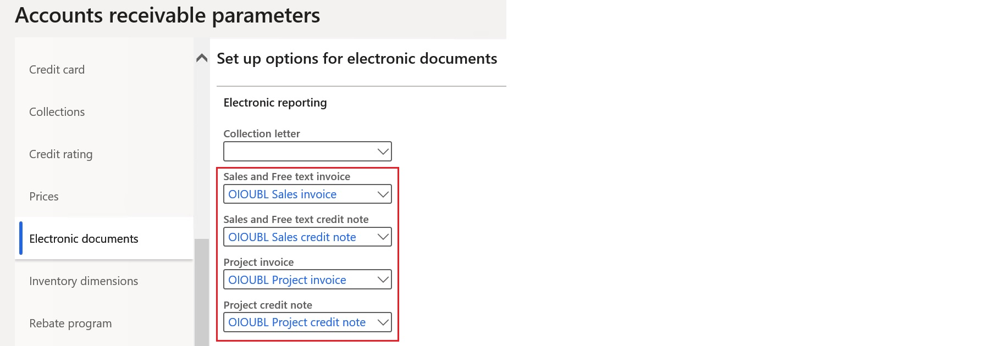
Configure parameters
Configure legal entity parameters
Go to Organization administration > Organizations > Legal entities.
On the Tax registration FastTab, in the Tax registration number field, enter the company's value-added tax (VAT) number.
On the Registration numbers FastTab, set the Print Foretaksregisteret on sales documents option for Norway to Yes.
On the Bank account information FastTab, in the Routing number field, enter the company's organization number.
In the Bank account field, enter the company's bank account number.
Note
The company bank account must already be set up at Cash and bank management > Bank accounts > Bank accounts.
Configure customer parameters
- Go to Accounts receivable > Customers > All customers, and select a customer.
- On the Invoice and delivery FastTab, set the eInvoice option to Yes to enable electronic invoices to be generated.
- Set the eInvoice attachment option to Yes to attach a PDF copy of the printable invoice to the electronic invoice.
- In the Tax exempt number field, enter the customer's VAT exempt number.
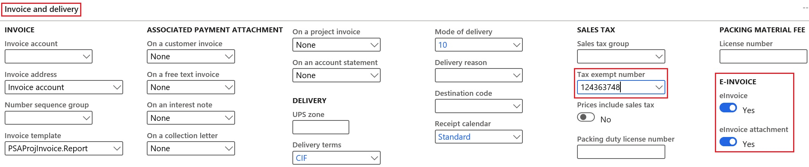
Units of measure configuration
- Go to Organization administration > Setup > Units > Units.
- Select a unit ID in the list, and then select External codes.
- On the External codes page, in the Overview section, in the Code field, enter a code that corresponds to the selected unit ID.
- In Value section, in Value field, enter the external code that should be used as the units of measure code for international trade. This code is recommended by the United Nations Economic Commission for Europe (UN/ECE).
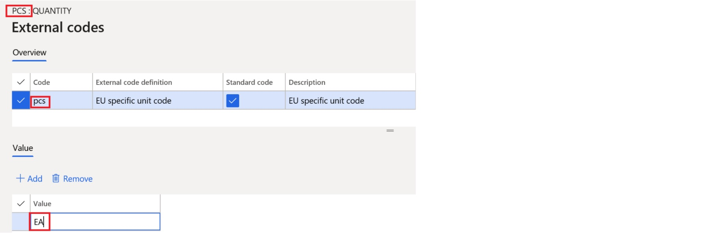
Sales tax codes transformation
When you generate electronic invoices, the sales tax code rates are analyzed and transformed into UNCL5305-compliant categories. The following logic is used:
- For all non-zero tax rates, the S category is used.
- For all zero tax rates, either the E category or the Z category is used, depending on the reporting code that is configured for tax-free sales.
Customer requisition
When you register free text invoices, invoices that are based on sales orders, or project invoices, you must enter a customer requisition. You can also add an optional customer reference.
Free text invoices
- Go to Accounts receivable > Invoices > All free text invoices.
- Create a new invoice, or select an existing invoice.
- In the Header view, on the Customer FastTab, in the References section, enter values in the Customer requisition and Customer reference fields.
Sales orders
- Go to Accounts receivable > Orders > All sales orders.
- Create a new sales order, or select an existing sales order.
- In the Header view, on the General FastTab, in the References section, enter values in the Customer requisition and Customer reference fields.
Project invoices
Go to Project management and accounting > Projects > Project contracts.
Create a new project contract, or select an existing project contract.
On Funding sources FastTab, select or create a funding source of the Customer type, and then select Details.
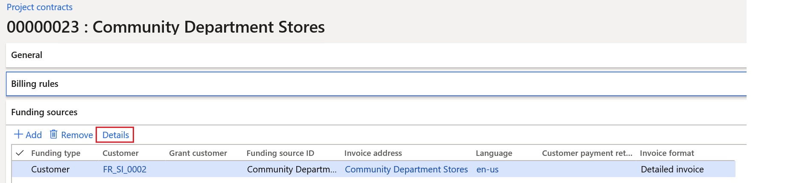
On the Funding source details page, on the Other FastTab, in References section, in the Customer requisition and Customer reference fields, enter default values for the contract. Alternatively, you can enter project-specific values in the corresponding fields on the E-invoice FastTab.
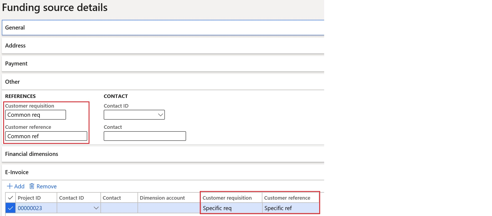
To enter customer requisition and reference values directly on the project invoice proposal, follow these steps:
- Go to Project management and accounting > Projects invoices > Project invoice proposals.
- Create a new invoice proposal, or select an existing invoice proposal.
- On the Invoice proposal header FastTab, in the e-Invoice section, enter values in Customer requisition and Customer reference fields.
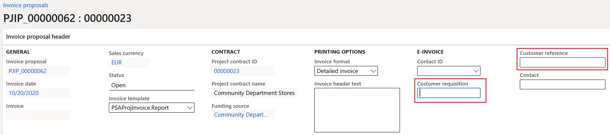
Customer accounting code registration
You can enter customer accounting codes when you work with free text invoices, invoices that are based on sales orders, or project invoices.
Free text invoices
Go to Accounts receivable > Invoices > All free text invoices.
Create a new invoice, or select an existing invoice.
In the Header view, on the General FastTab, in the e-Invoice section, in the Dimension account field, enter the accounting code for the invoice.
To have a separate accounting code for each invoice line, follow these steps:
- Set the Line-specific option to Yes.
- Switch to the Lines view.
- On the Line details FastTab, on the General tab, in the Dimension account field, enter a line-specific accounting code for each invoice line.
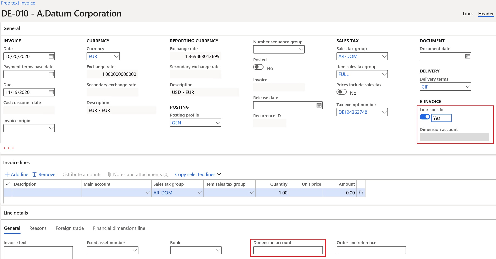
Sales orders
Go to Accounts receivable > Orders > All sales orders.
Create a new sales order, or select an existing sales order.
In the Header view, on the General FastTab, in the e-Invoice section, in the Dimension account field, enter the accounting code for the order.
To have a separate accounting code for each order line, follow these steps:
- Set the Line-specific option to Yes.
- Switch to the Lines view.
- On the Line details FastTab, on the General tab, in the Dimension account field, enter a line-specific accounting code for each order line.
Project invoices
Go to Project management and accounting > Projects > Project contracts.
Create a new project contract, or select an existing project contract.
On Funding sources FastTab, create or select a funding source of the Customer type, and then select Details.
On Funding source details page, on the E-invoice FastTab, in the Dimension account field, enter the project-specific default accounting code.
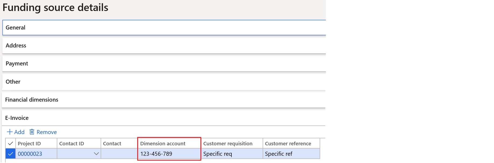
To enter customer accounting codes directly in project invoice proposals, follow these steps:
- Go to Project management and accounting > Projects invoices > Project invoice proposals.
- Create a new invoice proposal, or select an existing invoice proposal.
- On the Invoice proposal header FastTab, in the e-Invoice section, in the Dimension account field, enter the accounting code.
To have a separate accounting code for each transaction line, follow these steps:
- Set the Line-specific option to Yes.
- On the Invoice proposal transactions FastTab, in the Dimension account field, enter a line-specific accounting code for each transaction line.
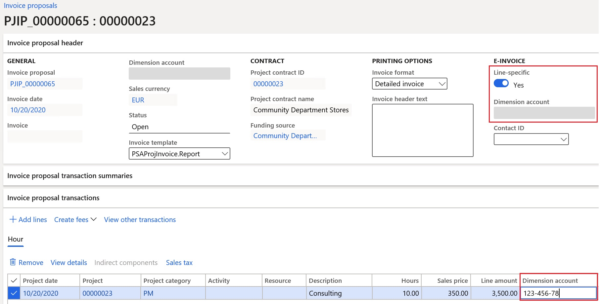
Export customer electronic invoices
Send e-invoices
When an invoice is posted, you can generate an electronic invoice by selecting Send > Original for the selected invoice.
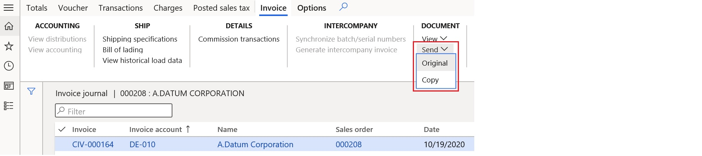
View e-invoices
To inquire about the XML files of electronic invoices that have been generated, follow these steps.
Go to Organization administration > Electronic reporting > Electronic reporting jobs.
Select a job, and then select Show files.
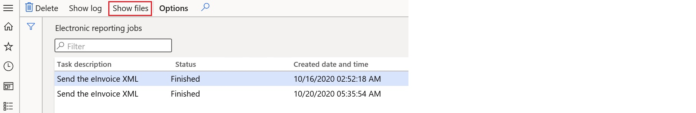
Select Open to download the file that contains the electronic invoice.
If generation of the electronic invoices fails because of errors, select Show log > Message details to view more details about the error message.
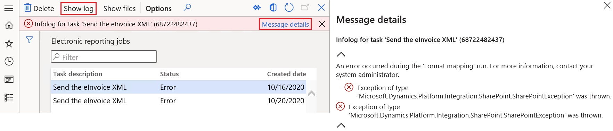
Send e-invoices to ER destinations
You can set up ER destinations for electronic invoice formats. In this case, output XML files that contain electronic invoices will automatically be sent to the defined destinations immediately after the invoices are posted. When you post the invoices, you must turn on the Print invoice parameter.
For more information about ER destinations, see Electronic reporting destinations.